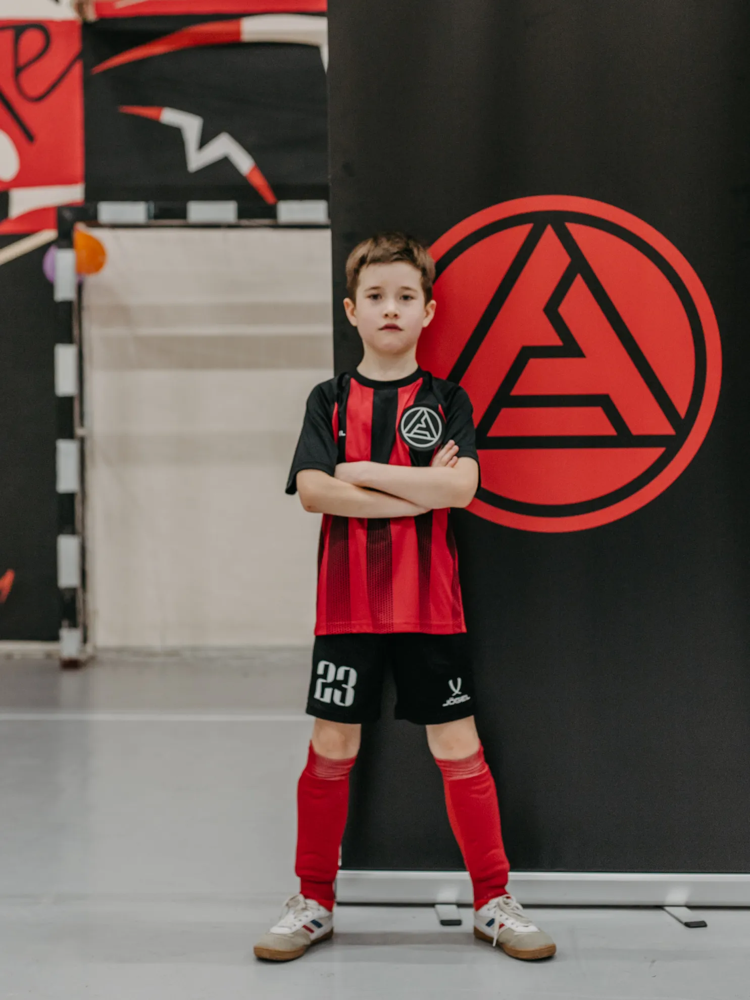
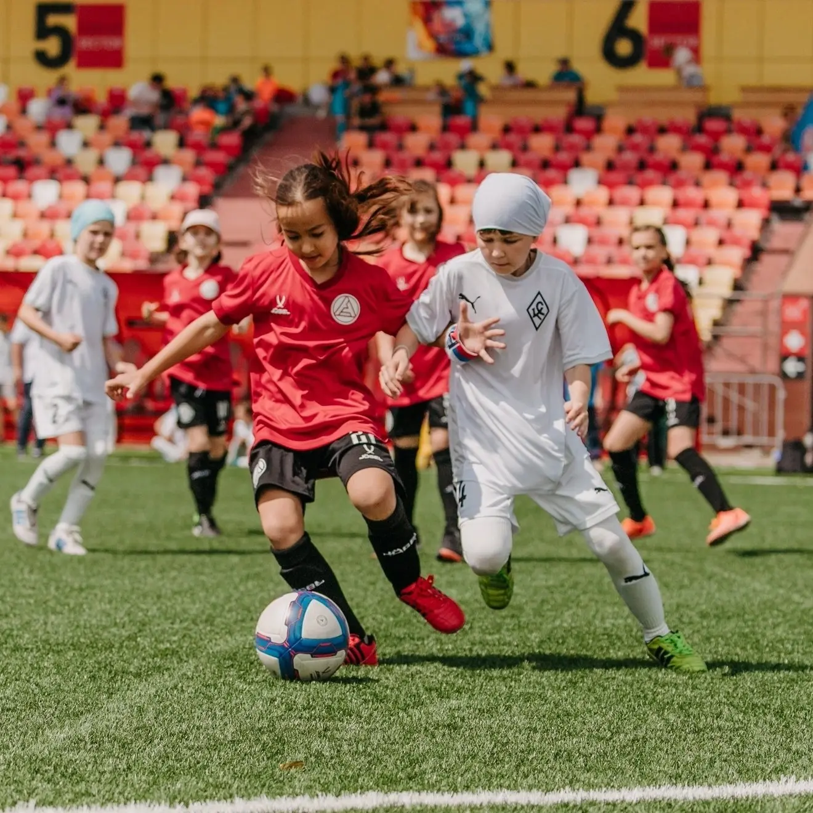
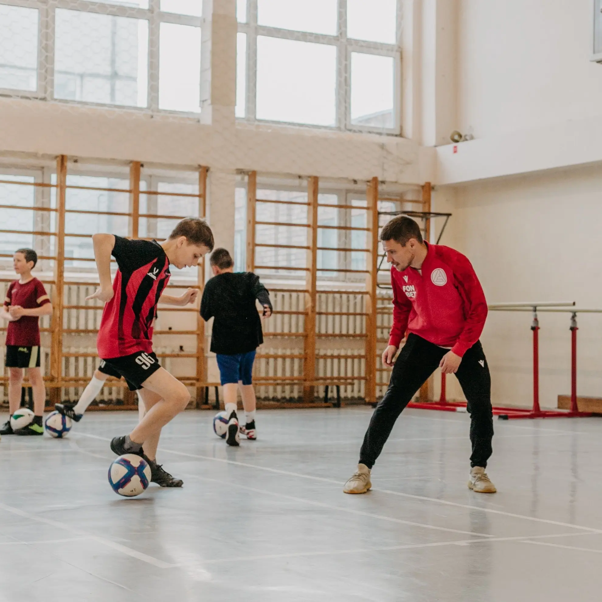
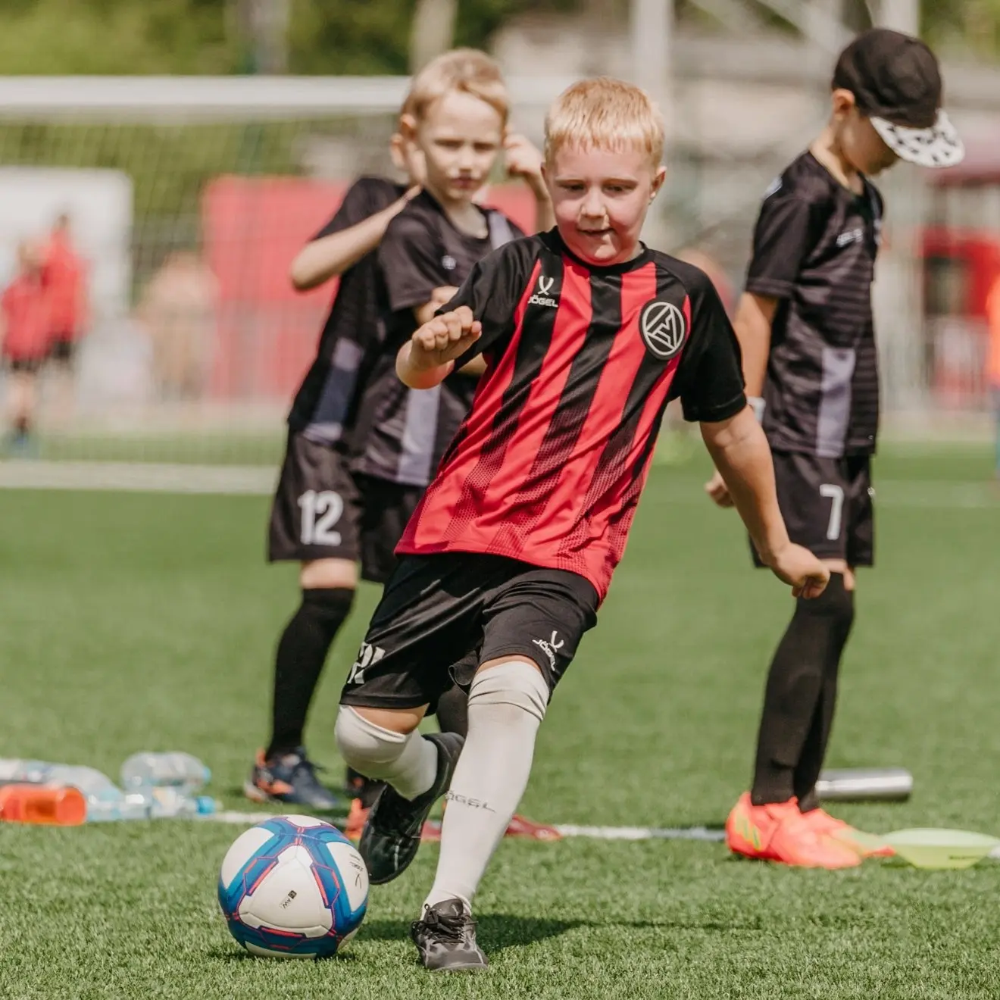
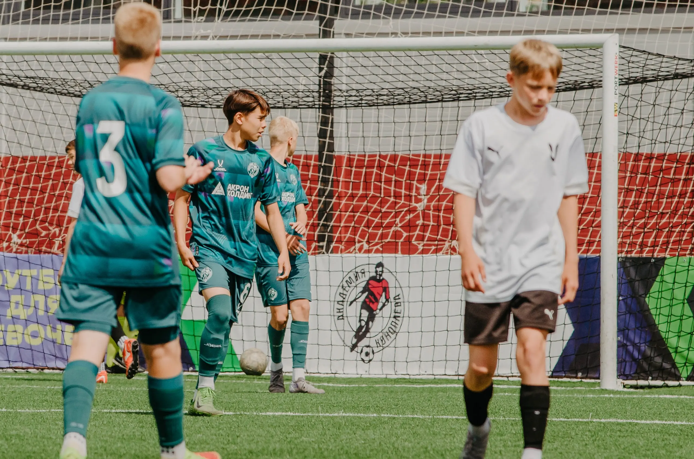

Футбольный клуб Акрон, Тольятти
01
ФК основан весной 2018 года. Представляет Тольятти и Самарскую
область в сезоне 2024/25 в Российской Премьер-Лиге – главном
турнире отечественного футбола. Свои домашние матчи в сезоне
команда проводит на стадионе «Солидарность Самара Арена». За
шесть лет своего существования «Акрон» дошел до статуса одного
из ярчайших региональных клубов, способных удивить на футбольном
поле и за его пределами. В мае 2022 года ФК «Акрон» вошёл в
структуру управления «Академии Коноплева» в качестве учредителя.
«Акрон-Академия Коноплёва», помимо выступления воспитанников на
всероссийских соревнованиях, представлена тремя командами в
турнирах Юношеской Футбольной Лиги и командой в Молодёжной
Футбольной Лиге.
ГК Акрон Холдинг заключил соглашение с Правительством Самарской
области, согласно которому идёт активное выполнение работ по
реконструкции имеющейся инфраструктуры и строительство новых
объектов спорта, внедрение новой эффективной стратегии
подготовки молодых футболистов, которая позволит не только
повысить качество тренировочного процесса, но и обеспечить
плавный переход воспитанников школы в профессиональный футбол.
РПЛ
Выход в РПЛ в сезоне 2024/25
3 место
Первая лига сезон 2023/24
Финал
Финал Пути Регионов Кубка России 2023/24
Детская футбольная школа Акрон
02
В 2011 году в поселке Новосемейкино Самарской области был создан
детский футбольный клуб «Акрон». Проект задуман с целью развития
детского и юношеского спорта в регионе и пропаганды здорового
образа жизни. Под руководством опытного и квалифицированного
тренерского состава в футбольной школе «Акрон» на постоянной
основе занимается более 300 ребят в возрасте от 5 до 16 лет из
Новосемейкино, Тольятти и Жигулёвска.
Здесь ребята получают возможность расти и развиваться. Школа
располагает собственным современно оборудованным футбольным
полем, открытым для игры круглый год. Команды футбольной школы
«Акрон» успешно выступает на всероссийских, областных и
городских соревнованиях.




Акрон-Академия футбола имени Коноплёва
03
АНО «Акрон-Академия футбола имени Юрия Коноплева» –
учебно-тренировочный центр, расположенный в Тольятти. Академия
занимается привлечением и воспитанием юных футболистов со всей
России. В распоряжении учебного заведе - ния крытый манеж, поля
с искусственным покры - тием, натуральным газоном, зал аэробики
и гимнастики, тренажерный зал, класс специальной футбольной
подготовки, медико-диагностический и восстановительный центры.
Академия работает с 2003 года.
На базе «Акрон-Академия Коноплева» курс спортивной подготовки
проходят более 250 спортсменов в возрасте от 8 до 19 лет,
включая 30 девочек. По достижении 13 лет футболисты и
футболистки получают возможность не только участвовать в
тренировочном процессе, но и поступить в общеобразовательную
школу, а также проживать на территории Академии.
Обучающихся детей
Тренерский состав академии
Воспитанников в РПЛ
Воспитанников в ПФЛ и ФНЛ
«Акрон» выстраивает многоступенчатую систему подготовки
футболистов, фундаментом которой являются детские группы на базе
школ в Жигулёвске, Новосемейкино и Тольятти.
Следующей ступенью является «Акрон-Академия Коноплёва», в
структуре которой есть команды Юношеской футбольной лиги и МФЛ.
Для перехода в профессиональный футбол в 2023 году была создана
вторая команда «Акрон-2», которая была заявлена во Вторую Лигу
Б. В её составе выступают выпускники Академии.

Академики Акрон
На Чемпионате Мира по футболу 2018 года трое выпускников
Академии защищали честь России
Алан
Дзагоев
Дзагоев
Роман
Зобнин
Зобнин
Илья
Кутепов
Кутепов
Дмитрий
Пестряков
Пестряков
Академики Акрон неоднократные призеры и победители
межрегиональных, всероссийских и международных турниров